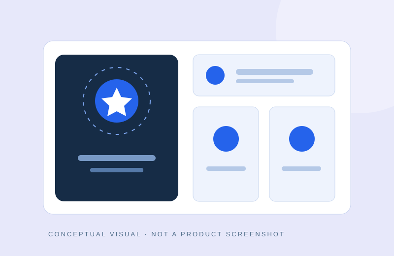

Business Analyst.
Business clarity.
Digital impact.
5+ years translating complex business needs into clear requirements, better processes, and digital solutions across Enterprise CRM, Loyalty, and Digital Transformation.
What I bring to the table.
Real work. Real complexity.
A selection of domains and challenges I have worked on, from customer operations to loyalty ecosystems.

Enterprise CRM & Digital Transformation
Customer service, booking, membership and business workflows across departments.
Explore experience ↗Conceptual illustration · Not an actual product screenshot
Nova Membership 2.0
Cross-business loyalty requirements across hospitality, F&B, fitness and entertainment.
Explore experience ↗Conceptual illustration · Not an actual product screenshot
Digital Governance & Process Improvement
Digital voting workflow with reported processing time reduced from 4 hours to 1 hour.
Explore experience ↗Conceptual illustration · Not an actual product screenshotImpact beyond documentation.
Selected project outcomes reported in my professional experience; results reflect team delivery and their specific project contexts.
From ambiguity to alignment.
A practical view of how I approach business analysis across the delivery lifecycle.
Built through different industries and perspectives.
From e-government and quality assurance to enterprise CRM and multi-business loyalty, each chapter sharpened how I connect business context with delivery.
View full experience ↗More than a job title.
I am drawn to nature, new places, different cultures, and meaningful conversations. Outside work, I value curiosity, compassion, family, and the space to keep growing.
“Grow with purpose. Live with heart.”Get to know me ↗
A winding road. A clear reason to keep going.
A scholarship opened the door to technology. Different jobs, cities, and life experiences helped me understand what matters: growing with intention, creating opportunities, and caring for the people I love.
Read my journey ↗Looking for a Business Analyst who connects the dots?
Explore my work, download my CV, or reach out to discuss a role, collaboration, or shared interest.